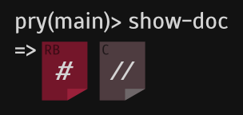

Pages 31
- Home
- Available plugins
- Command system
- Contributing
- Custom commands
- Customization and configuration
- Documentation browsing
- Editor integration
- Exceptions
- FAQ
- History
- Hooks
- Live help
- Plugin Proposals
- Plugins
- pry de
- Pry ecosystem
- Pry rc
- pry zle
- Remote sessions
- ruby dev.el
- Runtime invocation
- Setting up Rails or Heroku to use Pry
- Shell Integration
- Source browsing
- Special Locals
- State navigation
- Terse Start
- Use Cases
- User Input
- Windows support
- Show 16 more pages…
Clone this wiki locally
Documentation browsing

Quick Menu:
- View method and class documentation
- View basic method information
- Access ri documentation
- View documentation for Ruby Core (C code)
Overview
The ability to retrieve method documentation is very important when learning a new library or code base. And the ability to read documentation in a REPL environment, where you can interact with the methods on live code is particularly useful. Pry does this without relying on any external utilities, it simply extracts what it needs at run-time from the source file. This makes Pry's native documentation viewer potentially more useful than tools such as ri as Pry does not rely on docs being pre-generated when a gem is installed.
View method and class documentation
To retrieve a method or class's documentation use the show-doc command. show-doc accepts the same options as the show-source command and, like show-source extracts what it needs at run-time.
show-doc has a basic understanding of both the rdoc and YARD documentation formats and will attempt to render the documentation properly and with syntax highlighting.
Note that, as in the case of show-source, you can simply type show-doc (with no arguments) to operate on the 'current method' (when Pry is invoked inside a method using binding.pry at runtime).
Note: show-doc's 'number of lines' shows the total lines of documentation.
The following options are supported:
- Use the
-soption to select the super method. You can repeat-ssto get to the super method's super method. - Use the
-loption to include line numbers - Use the
-boption to include line numbers, but start numbering at 1 (useful when used withplay) - Use the
-aoption to show comments for all definitions and monkey-patches of the module/class
Aliases: ?
Example (recorded): viewing documentation for a class
[1] pry(main)> show-doc Pry::Method
From: /home/curacao/.gem/ruby/1.9.3/gems/pry-0.9.11.4/lib/pry/method.rb
Number of lines: 2
This class wraps the normal `Method` and `UnboundMethod` classes
to provide extra functionality useful to Pry.
[2] pry(main)>
Example (recorded): with ri syntax
[1] pry(main)> require 'set'
=> true
[2] pry(main)> show-doc Set#add
From: /opt/rubies/ruby-1.9.3-p327/lib/ruby/1.9.1/set.rb @ line 226:
Owner: Set
Visibility: public
Signature: add(o)
Number of lines: 2
Adds the given object to the set and returns self. Use merge to
add many elements at once.
[3] pry(main)>
Example (recorded): YARD
[1] pry(main)> show-doc Pry#r
From: /home/curacao/.gem/ruby/1.9.3/gems/pry-0.9.11.4/lib/pry/pry_instance.rb @ line 284:
Owner: Pry
Visibility: public
Signature: r(target=?, eval_string=?)
Number of lines: 10
Perform a read.
If no parameter is given, default to top-level (main).
This is a multi-line read; so the read continues until a valid
Ruby expression is received.
Pry commands are also accepted here and operate on the target.
param [Object, Binding] target The receiver of the read.
param [String] eval_string Optionally Prime `eval_string` with a start value.
return [String] The Ruby expression.
example
Pry.new.r(Object.new)
Example (recorded): superclass methods documentation (with help of -s or --super flag).
[1] pry(main)> class Parent
[1] pry(main)* # Parent!
[1] pry(main)* def foo; end
[1] pry(main)* end
=> nil
[2] pry(main)> class Child < Parent
[2] pry(main)* # Child!
[2] pry(main)* def foo; end
[2] pry(main)* end
=> nil
[3] pry(main)> show-doc Parent#foo
From: (pry) @ line 2:
Owner: Parent
Visibility: public
Signature: foo()
Number of lines: 1
Parent!
[4] pry(main)> show-doc Child#foo
From: (pry) @ line 6:
Owner: Child
Visibility: public
Signature: foo()
Number of lines: 1
Child!
[5] pry(main)> show-doc Child#foo -s
From: (pry) @ line 2:
Owner: Parent
Visibility: public
Signature: foo()
Number of lines: 1
Parent!
[6] pry(main)> class ChildChild < Child
[6] pry(main)* # ChildChild!
[6] pry(main)* def foo; end
[6] pry(main)* end
=> nil
[7] pry(main)> show-doc ChildChild#foo
From: (pry) @ line 10:
Owner: ChildChild
Visibility: public
Signature: foo()
Number of lines: 1
ChildChild!
[8] pry(main)> show-doc ChildChild#foo -s
From: (pry) @ line 6:
Owner: Child
Visibility: public
Signature: foo()
Number of lines: 1
Child!
[9] pry(main)> show-doc ChildChild#foo -ss
From: (pry) @ line 2:
Owner: Parent
Visibility: public
Signature: foo()
Number of lines: 1
Parent!
[10] pry(main)>
Example (recorded): view the documentation of all definitions and monkey-patches of classes or modules. Note that Pry assumes a class is only monkey-patched at most once per file, so will not find multiple monkey-patches in the same file.
[1] pry(main)> edit a.rb
[2] pry(main)> edit b.rb
[3] pry(main)> show-doc A
From: /home/curacao/a.rb
Number of lines: 1
Original.
[4] pry(main)> show-doc A -a
Found 2 candidates for `A` definition:
Candidate 1/2: /home/curacao/a.rb @ line 2:
Number of lines: 1
Original.
Candidate 2/2: /home/curacao/b.rb @ line 2:
Number of lines: 1
Reopened.
[5] pry(main)>
View basic method information
The stat command displays basic information about a method, including: its arity, its owner, its signature (if possible), and its type (i.e whether it's bound or unbound).
Example (recorded):
[1] pry(main)> stat Array#length
Method Information:
--
Name: length
Alias: size
Owner: Array
Visibility: public
Type: Unbound
Arity: 0
Method Signature: length()
Source Location: Not found.
[2] pry(main)>
Access ri documentation
The standard ri shell command can be accessed from within a Pry session using exactly the same syntax it has on the command line.
Example (recorded):
[1] pry(main)> ri Fixnum#++
Fixnum#+
(from ruby core)
------------------------------------------------------------------------------
fix + numeric -> numeric_result
------------------------------------------------------------------------------
Performs addition: the class of the resulting object depends on the class of
numeric and on the magnitude of the result.
[2] pry(main)>
View documentation for Ruby Core (C code)
When the pry-doc plugin is installed (gem install pry-doc) the C documentation for Ruby core methods (MRI) become available. As with pure Ruby methods, the show-doc command is used to display the documentation.
Example (recorded):
[1] pry(main)> show-doc Object#extend
From: eval.c (C Method):
Owner: Kernel
Visibility: public
Signature: extend(*arg1)
Number of lines: 19
Adds to _obj_ the instance methods from each module given as a
parameter.
module Mod
def hello
"Hello from Mod.\n"
end
end
class Klass
def hello
"Hello from Klass.\n"
end
end
k = Klass.new
k.hello #=> "Hello from Klass.\n"
k.extend(Mod) #=> #<Klass:0x401b3bc8>
k.hello #=> "Hello from Mod.\n"
[2] pry(main)>